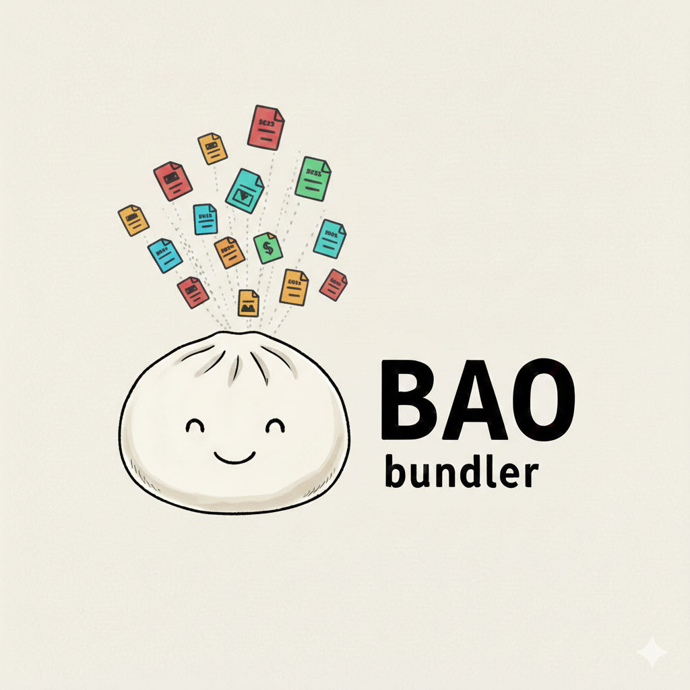

Bao Bundler is a simple, code-driven asset bundler for web projects, built with Bun. It provides a flexible way to define and manage asset processing pipelines by combining Flows (which define what to bundle) and Runners (which define how to process them).
You define your build process imperatively in code, which allows for maximum flexibility and control.
FolderFlow: Process files within a folder.FileFlow: Process a single file.VoidFlow: Process a file without producing output.CopyRunner: Copies files from source to destination.bun add bao-bundler
Bao Bundler is used by defining your build steps in a script and executing it with Bun. This code-driven approach gives you full control over the build process.
build.ts)import { Project } from 'bao-bundler';
import { FolderFlow, FileFlow } from 'bao-bundler/flows';
import { CopyRunner } from 'bao-bundler/runners';
await new Project('bao', [
{
runner: new CopyRunner(),
flow: new FolderFlow({
source: 'assets/images',
dest: 'build/images',
}),
},
{
runner: new CopyRunner(),
flow: new FolderFlow({
source: 'assets/fonts',
dest: 'build/fonts',
expand: true,
}),
},
{
runner: new CopyRunner(),
flow: new FileFlow({
source: 'assets/favicon.ico',
dest: 'build/favicon.ico',
}),
},
]).build();
console.log('Build complete!');
bun run build.ts
Control log output via the BAO_VERBOSITY environment variable:
BAO_VERBOSITY=DEBUG bun run build.ts # default — all logs
BAO_VERBOSITY=INFO bun run build.ts # info, warn, error
BAO_VERBOSITY=WARN bun run build.ts # warn and error only
BAO_VERBOSITY=ERROR bun run build.ts # errors only
You can create custom Flows and Runners by implementing the exported interfaces.
import { type Flow } from 'bao-bundler';
import { glob } from 'glob';
export class GlobFlow implements Flow {
id: string;
constructor(private config: { pattern: string; dest: string }) {
this.id = `GlobFlow:${config.pattern}`;
}
async execute() {
const files = await glob(this.config.pattern);
return {
source: { path: files },
dest: { path: this.config.dest },
};
}
}
import { type Runner } from 'bao-bundler';
import sass from 'sass';
export class SassRunner implements Runner {
async run(input) {
const result = sass.compile(input.source.path as string);
await Bun.write(input.dest.path as string, result.css);
}
}
The project.build() method:
step in order, letting the flow provide paths and the runner process the files.new Project(name, steps)name: string - The name of your project.steps: { runner: Runner; flow: Flow }[] - An array of step objects that define the build process.project.build()Asynchronously runs the entire build process.
bao-bundler/flowsnew FolderFlow(config)config: { source: string; dest: string; expand?: boolean; extension?: string }expand is true, resolves individual files instead of the folder path. Use extension to filter by file type.new FileFlow(config)config: { source: string; dest: string }new VoidFlow(config)config: { filePath: string }bao-bundler/runnersnew CopyRunner()Copies files or directories from source to destination.